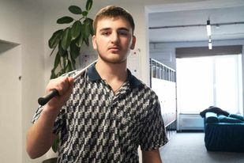
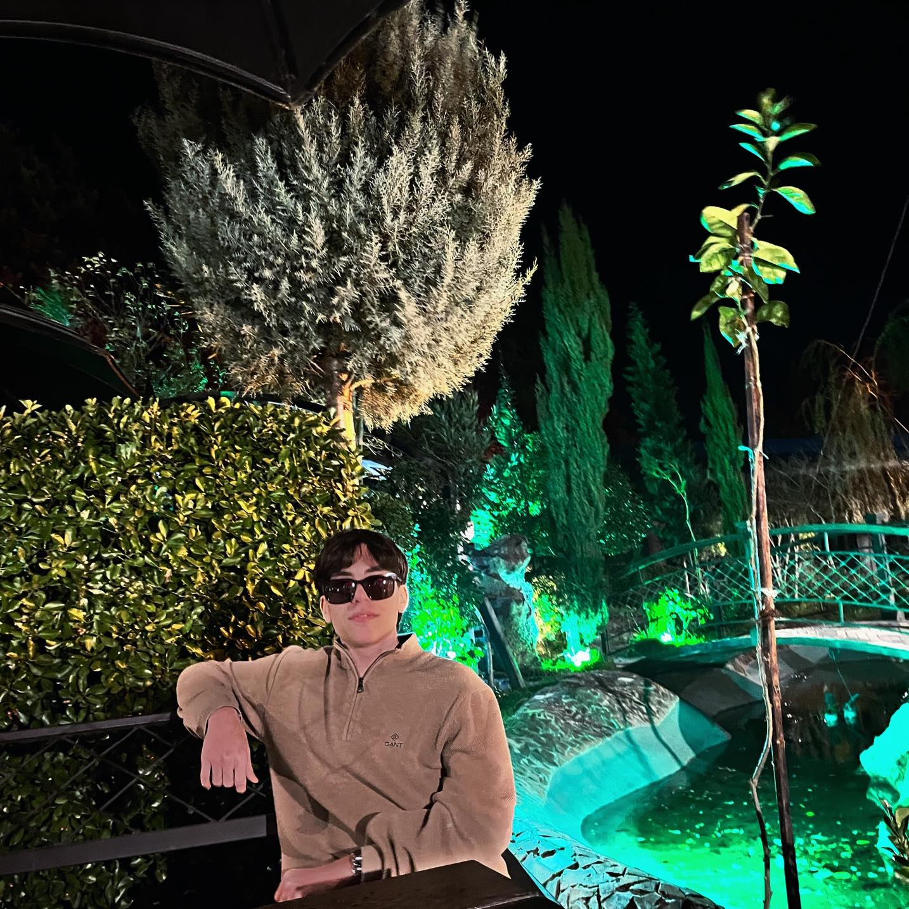
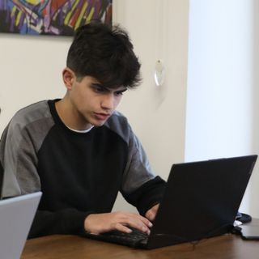
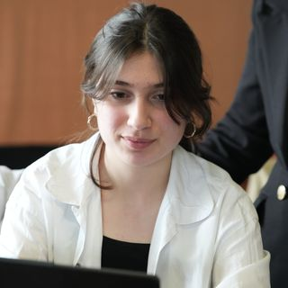
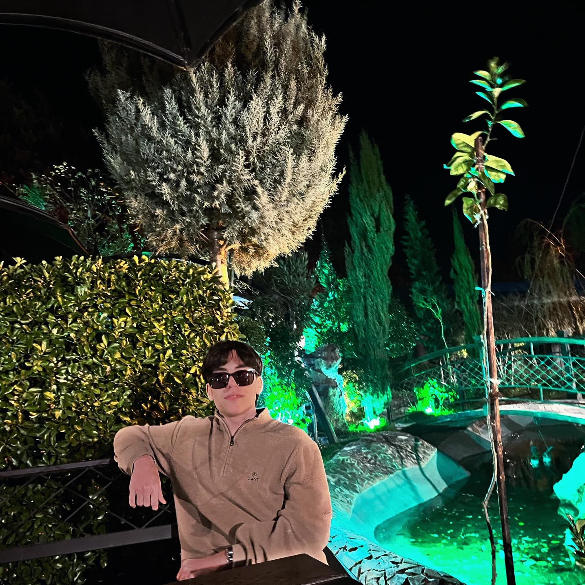
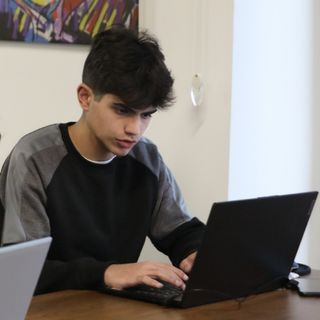
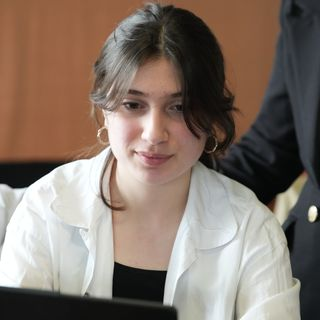

This is the main leader and teacher of our academy, his name is Nika Keshelava, he taught everything to our mentors, who will pass this knowledge on to us.

And now we introduce you to some of our mentors who try their best to teach us all about programming and grow us into future mentors.
My mentor is Luka Tshvaradze, unlike other mentors, with whom I have only had contact two or three times,
I know more about him than other mentors, and I can freely say that he is the best mentor.
You can talk to him about any topic while relaxing,
even if it is not related to the lesson, anime, exercise, etc.

The next mentor is Davit Janezashvili, I can't talk much about him because I had very few contact with him, but I can freely say that he is very funny and he is also a very good mentor.
And the last mentor is Gabriel Molodin. I can't say much about Gabriel either, but I know for sure that he is also a very good mentor and any member of the academy will agree with me.
Now let's talk about the leaders of the squad.
It is the duty of the squad leader to supervise the members of his squad to help them with anything they do not understand.
Accordingly, squad leaders are also well paid,
some squad leaders achieved this rank quickly and others took a long time,
I will show you some squad leaders that I know and have heard about.

 




